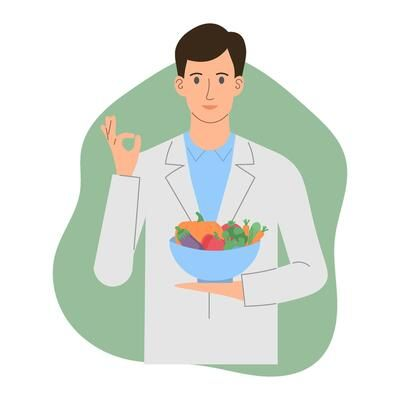

Biến kiến thức dinh dưỡng trở nên đơn giản.
Chúng tôi xây dựng NutriWise để giúp bạn vượt qua "ma trận" thông tin sức khỏe bằng những kiến thức đã được chọn lọc và kiểm chứng.
Our Mission
Cung cấp một nền tảng giáo dục sức khỏe hoàn toàn miễn phí, trực quan và an toàn. NutriWise tin rằng một lối sống lành mạnh bắt đầu từ sự thấu hiểu cơ thể chính mình.
Chuẩn khoa học
Nội dung xây dựng dựa trên nền tảng nghiên cứu y khoa, không cung cấp lời khuyên vô căn cứ.
Tính thực tiễn
Cung cấp công cụ đo lường BMI và tính toán dinh dưỡng để bạn áp dụng ngay vào đời sống.
Meet the Creator
Được phát triển với niềm đam mê kết hợp giữa lập trình Web và sức khỏe cộng đồng. NutriWise là một dự án tâm huyết nhằm mang lại giá trị thực cho người dùng.
Liên hệ với chúng tôi
Quy trình biên tập chuẩn khoa học
Mọi bài viết trên NutriWise không dựa trên xu hướng mạng xã hội hay các chế độ ăn kiêng truyền miệng. Chúng tôi tổng hợp dữ liệu từ các tổ chức y tế uy tín (như WHO, FAO) và được rà soát chéo bởi các chuyên gia có chuyên môn.
Mục tiêu của chúng tôi là dịch những thuật ngữ y khoa phức tạp thành ngôn ngữ dễ hiểu, giúp bạn tự tin đưa ra quyết định cho bữa ăn hàng ngày.
Câu chuyện của NutriWise
Giữa thời đại bùng nổ thông tin, việc tìm kiếm một chế độ ăn phù hợp thường đi kèm với sự hoang mang. Các trào lưu ăn kiêng xuất hiện chớp nhoáng, những lời khuyên mâu thuẫn nhau tràn lan trên mạng xã hội khiến việc hiểu đúng về dinh dưỡng trở nên khó khăn hơn bao giờ hết.
Đó là lý do NutriWise ra đời. Chúng tôi đóng vai trò là một "bộ lọc" thông tin, dọn dẹp những thuật ngữ y khoa phức tạp và loại bỏ những lầm tưởng tai hại. Mục tiêu của dự án là xây dựng một từ điển dinh dưỡng số — nơi mọi kiến thức đều minh bạch, dễ hiểu và hoàn toàn miễn phí cho cộng đồng.
TIÊU CHUẨN NỘI DUNG
Nền tảng dữ liệu đáng tin cậy
Chúng tôi không tự tạo ra lời khuyên y tế. Mọi thông tin trên NutriWise đều được tham chiếu từ các nguồn chuẩn mực.
Tổ chức Y tế Toàn cầu
Dữ liệu tiêu chuẩn được cập nhật từ Tổ chức Y tế Thế giới (WHO) và Tổ chức Lương thực & Nông nghiệp Liên Hợp Quốc (FAO).
Nghiên cứu Lâm sàng
Tham chiếu các bài báo cáo khoa học từ những tạp chí y khoa và viện dinh dưỡng quốc gia.
Tính Khách quan
Website hoạt động độc lập, phi lợi nhuận và không bị chi phối bởi bất kỳ nhãn hàng thực phẩm chức năng nào.